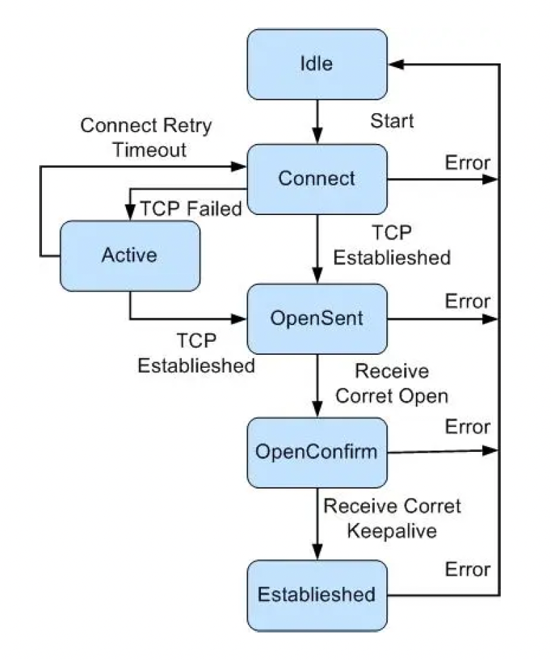

sonic各类告警日志梳理
1. 硬件类
本地日志：/var/log/syslog
1.1. 电源
插入
1
2初始化时默认打印
2022-02-14 17:56:02.609340 HOSTNAME <local2.warning> WARNING pmon#hwmgrd: :pluggable_dev_log:- Psu2 is plugged in. vendor: ARTESYN, serial number: L214VZ006005P拔出
1
2
3
4暂无操作日志，日志代码如下：
logger.log_warning(device + ' is pulled out. ')
预估拔出电源日志
2022-02-14 17:56:02.609340 HOSTNAME <local2.warning> WARNING pmon#hwmgrd: :pluggable_dev_log:- Psu2 is pulled out.异常
1
2
3异常也可能为四种异常（'no power', 'thermal error', 'fan error', 'vol error'）的任意组合，共 15 种情况：
2022-02-14 17:56:02.614955 HOSTNAME <local2.warning> WARNING pmon#hwmgrd: :dev_alarm_log:- Psu2 is alarm: no power
2021-12-22 03:42:27.825952 HOSTNAME <local2.warning> WARNING pmon#hwmgrd: :dev_alarm_log:- Psu1 is alarm: from normal to no power, vol error
- 正常
1
2初始化时也会打印
2022-02-14 17:56:02.596387 HOSTNAME <local2.warning> WARNING pmon#hwmgrd: :dev_alarm_log:- Psu1 is normal
1.2. 风扇
插入
1
2初始化时默认打印
2022-02-14 10:25:37.481551 HOSTNAME <local2.warning> WARNING pmon#hwmgrd: :pluggable_dev_log:- Fan2 is plugged in. vendor: Inventec, serial number: 945301818370UZ拔出
1
2
3
4暂无操作日志，日志代码如下：
logger.log_warning(device + ' is pulled out. ')
预估拔出风扇日志
2022-02-14 10:25:37.481551 HOSTNAME <local2.warning> WARNING pmon#hwmgrd: :pluggable_dev_log:- Fan2 is pulled out.异常
1
2
3
4暂无操作日志，日志代码如下：
logger.log_warning('%s is alarm' % device)
预估风扇异常日志
2022-02-14 17:56:15.038878 HOSTNAME <local2.warning> WARNING pmon#hwmgrd: :dev_alarm_log:- Fan6 is alarm正常
1
2初始化时正常默认打印
2022-02-14 17:56:15.038878 HOSTNAME <local2.warning> WARNING pmon#hwmgrd: :dev_alarm_log:- Fan6 is normal
1.3. CPU
本地日志：/var/log/monit.log
monit 检测到用户态 CPU 使用率过高告警
1
2022-02-17 16:05:47.705193 HOSTNAME <local2.err> ERR monit[652]: 'HOSTNAME.TEST' cpu user usage of 93.1% matches resource limit [cpu user usage>90.0%]
monit 检测到内核态 CPU 使用率过高告警
1
2022-02-17 16:16:06.390901 HOSTNAME <local2.err> ERR monit[615]: 'HOSTNAME.TEST' cpu system usage of 99.8% matches resource limit [cpu system usage>90.0%]
1.4. 内存
本地日志：/var/log/monit.log
- monit 检测到内存使用率过高告警
1
2022-02-17 16:46:05.407053 HOSTNAME <local2.err> ERR monit[641]: 'HOSTNAME.TEST' mem usage of 85.9% matches resource limit [mem usage>80.0%]
1.5. 硬盘
本地日志：/var/log/monit.log
- monit 检测到总磁盘使用率过高告警
1
2022-02-17 16:52:06.521099 HOSTNAME <local2.err> ERR monit[641]: 'root-overlay' space usage 91.3% matches resource limit [space usage>90.0%]
1.6. 光模块
插入
1
2初始化时默认打印
2022-02-14 17:56:26.450923 HOSTNAME <local2.warning> WARNING pmon#hwmgrd: :pluggable_dev_log:- Sff12 is plugged in. vendor: FINISAR, serial number: PZ611NQ拔出
1
2021-12-14 16:10:18.780321 HOSTNAME <local2.warning> WARNING pmon#hwmgrd: :pluggable_dev_log:- Sff1 is pulled out.
1.7. 线卡
插入
1
2初始化时默认打印
2017-02-05 05:25:10.419415 HOSTNAME <local2.warning> WARNING pmon#hwmgrd: :pluggable_dev_log:- Linecard4 is plugged in. vendor: H3C, serial number: 210231AF1D020600001B拔出
1
2
3
4暂无操作日志，日志代码如下：
logger.log_warning(device + ' is pulled out. ')
预估拔出板卡日志
2017-02-05 05:25:10.419415 HOSTNAME <local2.warning> WARNING pmon#hwmgrd: :pluggable_dev_log:- Linecard4 is pulled out.
1.8. 温度
- 高温告警
1
2022-02-02 23:48:48.859650 HOSTNAME <local2.warning> WARNING pmon#drv: :dev_alarm_log:- Thermal alarm: hotspot11 : 93.00 Centigrade
2. 端口类
本地日志：/var/log/syslog
2.1. 硬件端口
端口 UP
1
2022-02-14 10:32:54.573793 HOSTNAME <local2.warning> WARNING swss#orchagent: :- updatePortOperStatus: OperStatus of Port Ethernet38 (alias: he-1/1/38) changed from down to up
端口 DOWN
1
2022-02-14 12:40:34.319598 HOSTNAME <local2.warning> WARNING swss#orchagent: :- updatePortOperStatus: OperStatus of Port Ethernet37 (alias: he-1/1/37) changed from up to down
2.2. 三层接口
三层接口 UP
1
2022-02-14 10:32:54.583867 HOSTNAME <local2.warning> WARNING swss#orchagent: :- setHostVlanAdminState: OperStatus of L3Interface Vlan38 changed to up
三层接口 DOWN
1
2022-02-14 12:40:34.344832 HOSTNAME <local2.warning> WARNING swss#orchagent: :- setHostVlanAdminState: OperStatus of L3Interface Vlan40 changed to down
3. 协议类异常
3.1. BGP
模块代码：
src/HOSTNAME-frr/frr/bgpd/
- 异常
1
2
3
4
5暂未找到异常日志，日志代码如下：
zlog_err("BGPd daemon failed: %s", strerror(errno));
zlog_err("getsockopt of SO_SNDBUF failed %s\n", safe_strerror(errno));
zlog_err("couldn't create af structure for peer %s", peer->host);
zlog_err ("bgp_connect_success peer's fd is negative value %d",
3.1.1. BGP 容器停启日志
本地日志：/var/log/daemon.log
BGP 容器启动日志
1
2022-01-25 11:11:51.100344 HOSTNAME <daemon.info> INFO systemd[1]: Started BGP container.
BGP 容器停止日志
1
2021-12-24 11:20:50.749969 HOSTNAME <daemon.info> INFO systemd[1]: Stopping BGP container...
3.1.2. BGP 容器中关键子进程退出日志
此 local0 日志为监控工具 supervisor 产生（
/var/log/syslog），不会上传日志服务器
zebra 退出
1
2022-02-14 15:53:36.202696 HOSTNAME <local0.info> INFO bgp#supervisord 2022-02-14 15:53:31,385 INFO exited: zebra (terminated by SIGKILL; not expected)
staticd 退出
1
2022-02-14 15:58:56.443911 HOSTNAME <local0.info> INFO bgp#supervisord 2022-02-14 15:58:55,433 INFO exited: staticd (terminated by SIGKILL; not expected)
bgpd 退出
1
2022-02-14 16:01:46.588714 HOSTNAME <local0.info> INFO bgp#supervisord 2022-02-14 16:01:44,320 INFO exited: bgpd (terminated by SIGKILL; not expected)
3.1.3. BGP 建立/断开邻居事件日志
本地日志：/var/log/quagga/bgpd.log
邻居建立
1
2
3
42022-02-11 15:43:20.630737 HOSTNAME <local2.notice> NOTICE bgp#bgpd[45]: 10.166.0.66 went from Idle to Connect
2022-02-11 15:43:20.631348 HOSTNAME <local2.notice> NOTICE bgp#bgpd[45]: 10.166.0.66 went from Connect to OpenSent
2022-02-11 15:43:20.631844 HOSTNAME <local2.notice> NOTICE bgp#bgpd[45]: 10.166.0.66 went from OpenSent to OpenConfirm
2022-02-11 15:43:20.633960 HOSTNAME <local2.notice> NOTICE bgp#bgpd[45]: 10.166.0.66 went from OpenConfirm to Established邻居断开
1
22022-02-13 00:19:45.015599 HOSTNAME <local2.notice> NOTICE bgp#bgpd[45]: 10.166.0.66 went from Established to Clearing
2022-02-13 00:19:45.128939 HOSTNAME <local2.notice> NOTICE bgp#bgpd[45]: 10.166.0.66 went from Clearing to Idle
3.2. OSPF【未支持】
模块代码：
src/HOSTNAME-frr/frr/ospfd、src/HOSTNAME-frr/frr/ospf6d
- 异常
1
2
3
4
5未启用，异常代码
printf("Connecting to OSPF daemon on %s failed!\n", args[1]);
vty_out (vty, " OSPF not enabled on this interface%s", VNL);
flog_err(EC_OSPF_INIT_FAIL, "OSPF instance init failed: %s", strerror(errno));
flog_err(EC_LIB_SOCKET, "%s: ospf_sock_init is unable to open a socket", __func__);
3.3. ISIS【未支持】
模块代码：
src/HOSTNAME-frr/frr/isisd
- 异常
1
2
3未启用，异常代码
flog_err(EC_ISIS_CONFIG, "Could not bring up %s because of invalid config.", circuit->interface->name);
flog_err(EC_ISIS_CONFIG, "Clearing config for %s. Please re-examine it.", circuit->interface->name);
4. MAC 类
这类异常发生在芯片层级，不会输出告警日志
但可通过监听 BCM 系列线程异常状态（bcmL2X、bcmCNTR、bcmLINK、bcmDPC、bcmINTR、bcmTX、bcmXGS3AsyncTX、bcmRX、bcmL2age），推测设备大概率发生了 MAC 类异常
各 BCM 线程异常退出/重启日志如下：
1 | 2022-02-16 01:27:59.712742 HOSTNAME <local2.err> ERR monit[661]: 'bcmCNTR' status failed (9) -- Thread bcmCNTR has exited abnormally. It is being restarted now. |
5. 系统类
5.1. 各容器启/停状态日志查询
各容器启/停日志查看命令：
1 | sudo grep -i "${container_name} container" /var/log/daemon.log |
5.1.1. snmp 容器
1 | sudo grep -i "snmp container" /var/log/daemon.log | tail -n 20 |
5.1.2. lldp 容器
1 | sudo grep -i "lldp container" /var/log/daemon.log | tail -n 20 |
5.1.3. teamd 容器
1 | sudo grep -i "teamd container" /var/log/daemon.log | tail -n 20 |
5.1.4. bgp 容器
1 | sudo grep -i "bgp container" /var/log/daemon.log | tail -n 20 |
5.1.5. database 容器
1 | sudo grep -i "database container" /var/log/daemon.log | tail -n 20 |
5.1.6. radv 容器
1 | sudo grep -i "radv container" /var/log/daemon.log | tail -n 20 |
5.1.7. dhcp_relay 容器
1 | sudo grep -i "dhcp_relay container" /var/log/daemon.log | tail -n 20 |
5.1.8. syncd 容器
1 | sudo grep -i "syncd container" /var/log/daemon.log | tail -n 20 |
5.1.9. swss 容器
1 | sudo grep -i "swss container" /var/log/daemon.log | tail -n 20 |
5.1.10. pmon 容器
1 | sudo grep -i "pmon container" /var/log/daemon.log | tail -n 20 |
5.1.11. mgmt-framework 容器
（暂未开启）
1 | sudo grep -i "mgmt-framework container" /var/log/daemon.log | tail -n 20 |
5.1.12. sflow 容器
（暂未开启）
1 | sudo grep -i "sflow container" /var/log/daemon.log | tail -n 20 |
5.1.13. telemetry 容器
（暂未开启）
1 | sudo grep -i "telemetry container" /var/log/daemon.log | tail -n 20 |
5.2. 各容器内各进程对应日志文件路径
各容器进程对应日志文件路径表如下：
| 容器 | 日志文件 | 写日志的进程 |
|---|---|---|
| snmp | /var/log/daemon.log | snmp#snmp-subagent 进程运行日志<daemon.err/info/warning> snmp#snmpd进程 进程运行日志<daemon.warning> |
| /var/log/user.log | snmp#supervisord 守护进程日志<user.info> | |
| /var/log/syslog | snmp#supervisord 守护进程日志<local0.info> | |
| telemetry | /var/log/daemon.log | 守护进程日志<daemon.info> |
| /var/log/telemetry.log | telemetry 运行日志<user.info>,<daemon.info> | |
| /var/log/user.log | telemetry#supervisord 进程运行日志<user.info> | |
| /var/log/syslog | sonic systemd 日志<local0.info>,<local7.info> | |
| lldp | /var/log/daemon.log | lldp#lldpd 进程运行日志<daemon.warning/info> |
| /var/log/user.log | lldp#lldpmgrd 进程运行日志<user.err/warning/info/debug> | |
| /var/log/syslog | lldp#supervisord 日志<local0.info> | |
| /var/log/messages | start_module lldp 日志<local0.info/warning>,<local2.warning> | |
| /var/log/running.log | AUTOPROVISION pica_autoprovision 日志<local0.info/warning>,<local2.warning> | |
| sflow | /var/log/daemon.log | sflow 容器运行日志<daemon.info> |
| /var/log/user.log | sflow#supervisord 进程运行日志<user.info> | |
| /var/log/syslog | sflow#sflowmgrd 进程运行日志<local2.notice> sflow#supervisord 进程运行日志<local0.info> |
|
| radv | /var/log/daemon.log | radv 容器运行日志<daemon.info> |
| /var/log/user.log | radv#supervisord 进程运行日志<user.info> | |
| /var/log/syslog | radv#supervisord 进程运行日志<local0.info> | |
| dhcp_relay | /var/log/daemon.log | dhcp_relay 容器运行日志<daemon.info> |
| /var/log/user.log | dhcp_relay#supervisord 进程运行日志<user.info> | |
| /var/log/syslog | dhcp_relay#supervisord 进程运行日志<local0.info> | |
| syncd | /var/log/daemon.log | syncd 容器运行日志<daemon.info> |
| /var/log/user.log | syncd#syncd 进程运行日志<user.info/debug> syncd#supervisord 进程运行日志<user.info> syncd#dsserve 进程运行日志<user.notice> |
|
| /var/log/syslog | syncd#syncd 进程运行日志<local2.err/warning/debug/notice> syncd#supervisord 进程运行日志<local0.info> |
|
| teamd | /var/log/daemon.log | teamd 容器运行日志<daemon.info> |
| /var/log/teamd.log | teamd#teamd_PortChannel* 进程运行日志<daemon.debug> | |
| /var/log/user.log | teamd#supervisord 进程运行日志<user.info> | |
| /var/log/syslog | teamd#supervisord 进程运行日志<local0.info> teamd#teamsyncd/teammgrd 进程运行日志<local2.err/notice> |
|
| mgmt-framework | /var/log/daemon.log | mgmt-framework 容器运行日志<daemon.info> |
| /var/log/user.log | mgmt-framework#supervisord 进程运行日志<user.info> | |
| /var/log/syslog | mgmt-framework#supervisord 进程运行日志<local0.info> | |
| swss | /var/log/daemon.log | swss 容器运行日志<daemon.info> |
| /var/log/user.log | swss#intmgrd/restore_neighbor/supervisor-proc-exit-listener 进程运行日志<user.err/info> | |
| /var/log/syslog | swss#orchagent/portsyncd/neighsyncd/vrfmgrd/vxlanmgrd/switchmgrd/ fdbmgrd/cfgmgrd/intmgrd/transmgrd 进程运行日志<local0/local2.err/warning/notice> |
|
| pmon | /var/log/daemon.log | pmon 容器运行日志<daemon.info> |
| /var/log/user.log | pmon#supervisord 进程运行日志<user.info> | |
| /var/log/syslog | pmon#supervisord 进程运行日志<local0.info> pmon#hwmgrd 进程运行日志<local2.err/info> |
|
| bgp | /var/log/daemon.log | bgp 容器运行日志<daemon.info> |
| /var/log/quagga/bgpd.log | bgp#bgpd 进程运行日志<local2.err/warning/info> | |
| /var/log/quagga/zebra.log | bgp#zebra 进程运行日志<local2.err/warning/notice> | |
| /var/log/user.log | bgp#bgpcfgd 进程运行日志<user.info> bgp#supervisord 进程运行日志<user.info> |
|
| /var/log/messages | BGP xorp_bgp 运行日志<local2.err/warning> | |
| /var/log/running.log | RTRMGR xorp_rtrmgr 启动日志<local0.info> BGP xorp_bgp 运行日志<local2.err/info> |
|
| /var/log/syslog | bgp#fpmsyncd/monitorlinkd/staticd 进程运行日志<local2.err/warning/notice>,<local7.info> bgp#supervisord 守护进程日志<local0.info> |
|
| database | /var/log/daemon.log | database 容器运行日志<daemon.info> |
| /var/log/user.log | database 容器运行日志<user.notice> database#supervisord 守护进程日志<user.info> |
|
| /var/log/syslog | database#supervisord 进程运行日志<local0.info> | |
| /var/log/messages | WARMBOOT_FINALIZER 等待日志 | |
| /var/log/running.log | WARMBOOT_FINALIZER 等待日志 |
5.2.1. snmp 容器
日志文件：
- /var/log/daemon.log （snmp#snmp-subagent 进程运行日志<daemon.err/info/warning>；snmp#snmpd进程 进程运行日志<daemon.warning>）
- /var/log/user.log （snmp#supervisord守护进程日志<user.info>）
- /var/log/syslog （snmp#supervisord守护进程日志<local0.info>）
【1】snmp#snmpd进程
- /var/log/daemon.log
【2】snmp#snmp-subagent 进程
- /var/log/daemon.log
【3】snmp#supervisord 进程
- /var/log/user.log
- /var/log/syslog
5.2.2. telemetry 容器
日志文件：
- /var/log/daemon.log （守护进程日志<daemon.info>）
- /var/log/telemetry.log （telemetry 运行日志<user.info>,<daemon.info>）
- /var/log/user.log （telemetry#supervisord 进程运行日志<user.info>）
- /var/log/syslog （sonic systemd日志<local0.info>,<local7.info>）
【1】telemetry#supervisord 进程
- /var/log/user.log
- /var/log/telemetry.log
5.2.3. lldp 容器
日志文件：
- /var/log/daemon.log （lldp#lldpd 进程运行日志<daemon.warning/info>）
- /var/log/user.log （lldp#lldpmgrd 进程运行日志<user.err/warning/info/debug>）
- /var/log/syslog （lldp#supervisord 日志<local0.info>）
- /var/log/messages （start_module lldp日志<local0.info/warning>,<local2.warning>）
- /var/log/running.log （AUTOPROVISION pica_autoprovision日志<local0.info/warning>,<local2.warning>）
【1】lldp#lldpmgrd 进程
- /var/log/user.log
【2】lldp#lldpd 进程
- /var/log/daemon.log
【3】lldp#supervisord 进程
- /var/log/syslog
5.2.4. sflow 容器
日志文件：
- /var/log/daemon.log （sflow容器运行日志<daemon.info>）
- /var/log/user.log （sflow#supervisord 进程运行日志<user.info>）
- /var/log/syslog （sflow#sflowmgrd 进程运行日志<local2.notice>；sflow#supervisord 进程运行日志<local0.info>）
【1】sflow#sflowmgrd 进程
- /var/log/syslog
【2】sflow#supervisord 进程
- /var/log/user.log
- /var/log/syslog
5.2.5. radv 容器
日志文件：
- /var/log/user.log （radv#supervisord运行日志<user.info>）
- /var/log/syslog （radv#supervisord运行日志<local0.info>）
- /var/log/daemon.log （radv容器运行日志<daemon.info>）
【1】radv#supervisord 进程
- /var/log/user.log
- /var/log/syslog
5.2.6. dhcp_relay 容器
日志文件：
- /var/log/user.log （dhcp_relay#supervisord 进程运行日志<user.info>）
- /var/log/daemon.log （dhcp_relay容器运行日志<daemon.info>）
- /var/log/syslog （dhcp_relay#supervisord 进程运行日志<local0.info>）
【1】dhcp_relay#supervisord 进程
- /var/log/user.log
- /var/log/syslog
5.2.7. syncd 容器
日志文件：
- /var/log/user.log （syncd#syncd 进程运行日志<user.info/debug>；syncd#supervisord 进程运行日志<user.info>；syncd#dsserve 进程运行日志<user.notice>）
- /var/log/daemon.log （syncd容器运行日志<daemon.info>）
- /var/log/syslog （syncd#syncd 进程运行日志<local2.*>；syncd#supervisord 进程运行日志<local0.info>）
【1】syncd#syncd 进程
- /var/log/user.log
- /var/log/syslog
【2】syncd#dsserve 进程
- /var/log/user.log
【3】syncd#supervisord 进程
- /var/log/user.log
- /var/log/syslog
5.2.8. teamd 容器
日志文件：
- /var/log/teamd.log （teamd#teamd_PortChannel* 进程运行日志<daemon.debug>）
- /var/log/user.log （teamd#supervisord 进程运行日志<user.info>）
- /var/log/daemon.log （teamd 容器运行日志<daemon.info>）
- /var/log/syslog （teamd#supervisord 进程运行日志<local0.info>；teamd#teamsyncd/teammgrd进程运行日志<local2.err/notice>）
【1】teamd#teamd_PortChannel* 进程
- /var/log/teamd.log
【2】teamd#teamsyncd/teammgrd 进程
- /var/log/syslog
【3】teamd#supervisord 进程
- /var/log/user.log
- /var/log/syslog
5.2.9. mgmt-framework 容器
日志文件：
- /var/log/user.log （mgmt-framework#supervisord 进程运行日志<user.info>）
- /var/log/daemon.log （mgmt-framework 容器运行日志，<daemon.info>）
- /var/log/syslog （mgmt-framework#supervisord 进程运行日志<local0.info>）
【1】mgmt-framework#supervisord 进程
- /var/log/user.log
- /var/log/syslog
5.2.10. swss 容器
日志文件：
- /var/log/user.log （swss#intmgrd/restore_neighbor/supervisor-proc-exit-listener 进程运行日志<user.*>）
- /var/log/daemon.log （swss 容器运行日志<daemon.info>）
- /var/log/syslog （swss#orchagent/portsyncd/neighsyncd/vrfmgrd/vxlanmgrd/switchmgrd/fdbmgrd/cfgmgrd/intmgrd/transmgrd 进程运行日志<local0/local2.err/warning/notice>）
【1】swss#intmgrd/restore_neighbor/supervisor-proc-exit-listener 进程
- /var/log/user.log
【2】swss#orchagent/portsyncd/neighsyncd/vrfmgrd/vxlanmgrd/switchmgrd/fdbmgrd/cfgmgrd/intmgrd/transmgrd 进程
- /var/log/syslog
【3】swss#supervisord 进程
- /var/log/user.log
- /var/log/syslog
5.2.11. pmon 容器
日志文件：
- /var/log/user.log （pmon#supervisord 进程运行日志，<user.info>）
- /var/log/daemon.log （pmon容器运行日志，<daemon.info>）
- /var/log/syslog （pmon#supervisord 进程运行日志，<local0.info>；pmon#hwmgrd 进程运行日志<local2.info/err>）
【1】pmon#hwmgrd 进程
- /var/log/syslog
【2】pmon#supervisord 进程
- /var/log/syslog
- /var/log/user.log
5.2.12. bgp 容器
日志文件：
- /var/log/quagga/bgpd.log （bgp#bgpd 进程运行日志<local2.err/info/warning>）
- /var/log/quagga/zebra.log （bgp#zebra 进程运行日志<local2.err/warning/notice>）
- /var/log/user.log （bgp#bgpcfgd 进程运行日志<user.info>；bgp#supervisord 进程运行日志<user.info>）
- /var/log/daemon.log （bgp 容器运行日志<daemon.info>）
- /var/log/messages （BGP xorp_bgp 运行日志<local2.err/warning>）
- /var/log/running.log （RTRMGR xorp_rtrmgr 启动日志<local0.info>；BGP xorp_bgp 运行日志<local2.err/info>）
- /var/log/syslog （bgp#fpmsyncd/liblogging-stdlog/monitorlinkd/staticd 进程运行日志<local2.err/warning/notice>,<local7.info>；bgp#supervisord守护进程日志<local0.info> ）
【1】bgp#bgpd 进程
- /var/log/quagga/bgpd.log
【2】bgp#zebra 进程
- /var/log/quagga/zebra.log
【3】bgp#bgpcfgd 进程
- /var/log/user.log
【4】bgp#fpmsyncd/liblogging-stdlog/monitorlinkd/staticd 进程
- /var/log/syslog
【5】bgp#supervisord 进程
- /var/log/user.log
- /var/log/syslog
5.2.13. database 容器
日志文件：
- /var/log/user.log （ database 容器运行日志<user.notice>；database#supervisord守护进程日志<user.info>）
- /var/log/daemon.log （database容器运行日志，<daemon.info>）
- /var/log/messages （WARMBOOT_FINALIZER 等待日志）
- /var/log/running.log （WARMBOOT_FINALIZER 等待日志）
- /var/log/syslog （database#supervisord 进程运行日志，<local0.info>）
【1】database#supervisord 进程
- /var/log/user.log
- /var/log/syslog
5.3. 系统 Crash
思考点：譬如内核异常，不会直接输出日志